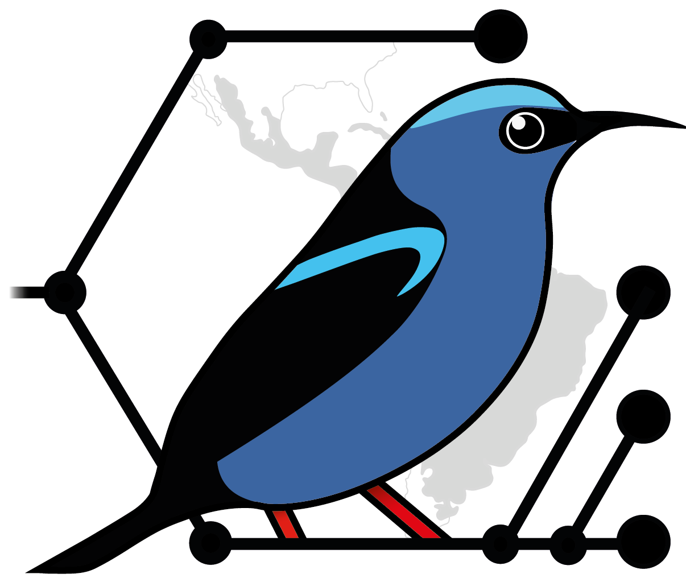

Proyectos Vigentes

Descripción
Descripción
Descripción
Descripción
La investigación de nuestro laboratorio se enfoca en comprender los procesos evolutivos que moldean la diversidad de las aves, así como en el estudio de los patrones de distribución, la estructura filogenética de las comunidades, la biogeografía y la sistemática, con un énfasis particular en el neotropico.
Museo de Zoología "Alfonso L. Herrera", Departamento de Biología Evolutiva, Facultad de Ciencias, UNAM
Apartado Postal 70-399, México D.F.
C.P. 04510 México
Teléfono: (+5255)56 22 54 35
e-mail 1: lasg@ciencias.unam.mx
e-mail 2: prodiv.aves@gmail.com
Responsable del Laboratorio
Profesor Titular B Tiempo Completo
Facultad de Ciencias, UNAM
Investigador Nacional SNII Nivel 2
Realicé mis estudios de Licenciatura y Doctorado en la UNAM, así como un posdoctorado en el Biodiversity Institute and Museum of Natural History de la University of Kansas (USA). Mis líneas de investigación se centran en la Biología Evolutiva (Biogeografía, Sistemática y Ecología Evolutiva), usando a las aves como modelo.
He realizado trabajo de campo en todo México, Estados Unidos y Perú; así como en Asia (Filipinas) y África (Guinea Ecuatorial y Liberia). Imparto clases a nivel licenciatura y posgrado en la UNAM y participo activamente en la dirección de tesis de licenciatura y posgrado de alumnos de la UNAM, la Universidad Autónoma de Guerrero y la Universidad Autónoma Metropolitana.
e-mail: lasg@ciencias.unam.mx
Estudiante de doctorado
Posgrado en Ciencias Biológicas, UNAM
Soy biólogo egresado de la FES Zaragoza y Maestro en Ciencias por la Facultad de Ciencias de la UNAM, donde actualmente curso el Doctorado en Ciencias Biológicas. Mis intereses se centran en la sistemática, filogeografía y ecología evolutiva.
Específicamente en comprender los procesos evolutivos que han dado forma a la diversidad de aves en México, tanto en regiones de tierras bajas como de montaña; esto mediante el uso de datos moleculares y modelado de nicho ecológico. Además, he realizado trabajo en campo en gran parte de México, me apasiona la fotografía y la divulgación científica.
e-mail: orlando.espinosa@ciencias.unam.mx
Estudiante de doctorado
Posgrado en Ciencias Biológicas, UNAM
Soy biólogo y maestro en ciencias de parte de la Facultad de Ciencias de la UNAM. Mi línea de investigación se centra en incorporar datos fósiles, ambientales y genéticos para investigar las patrones temporales y espaciales de la distribución de aves neotropicales.
Actualmente me encuentro haciendo mi doctorado investigando los efectos de las barreras históricas, ecológicas y físicas de los desiertos del oeste de Norteamérica sobre las aves.
e-mail: billchan@ciencias.unam.mx
Estudiante de doctorado
Posgrado en Ciencias Biológicas, UNAM
Biólogo egresado de la UNAM donde actualmente también realizo mis estudios de doctorado, explorando los procesos evolutivos que han originado la diversidad actual de aves en las regiones montañosas de México.
Además, me interesan otras áreas como la biogeografía, ecología evolutiva, macroecología y macroevolución. He realizado trabajo de campo en diversas regiones de México, Estados Unidos y Liberia. En mi tiempo libre me gusta observar aves y el senderismo.
e-mail: reinhardmata@ciencias.unam.mx
Descripción
Descripción
Descripción
Descripción